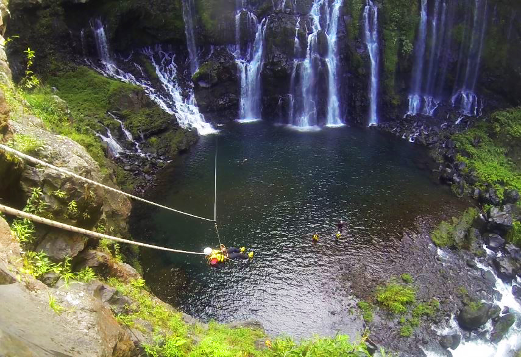
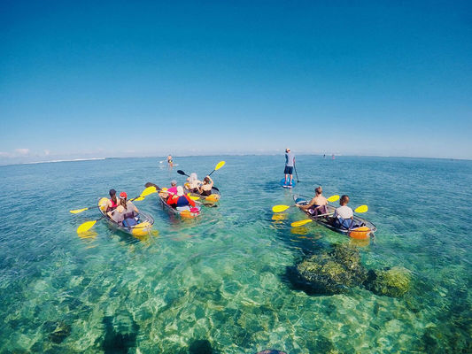
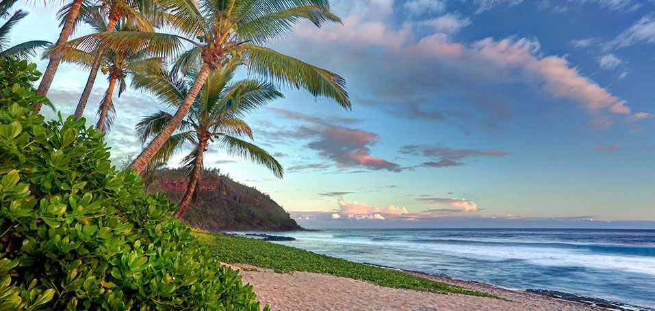
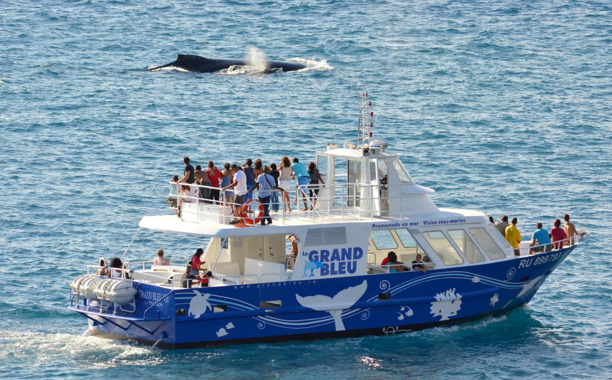
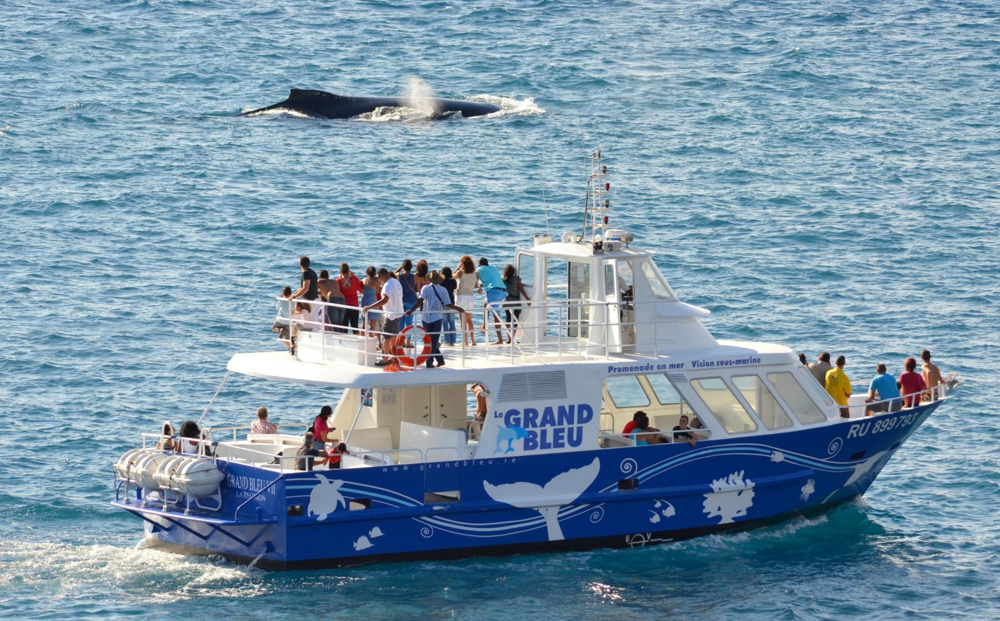
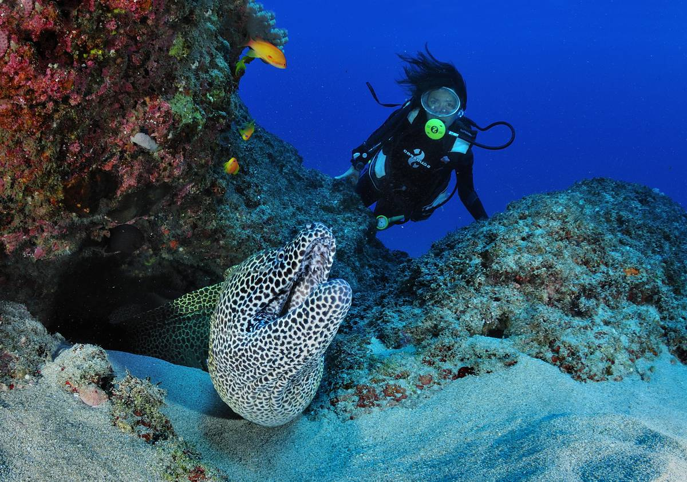
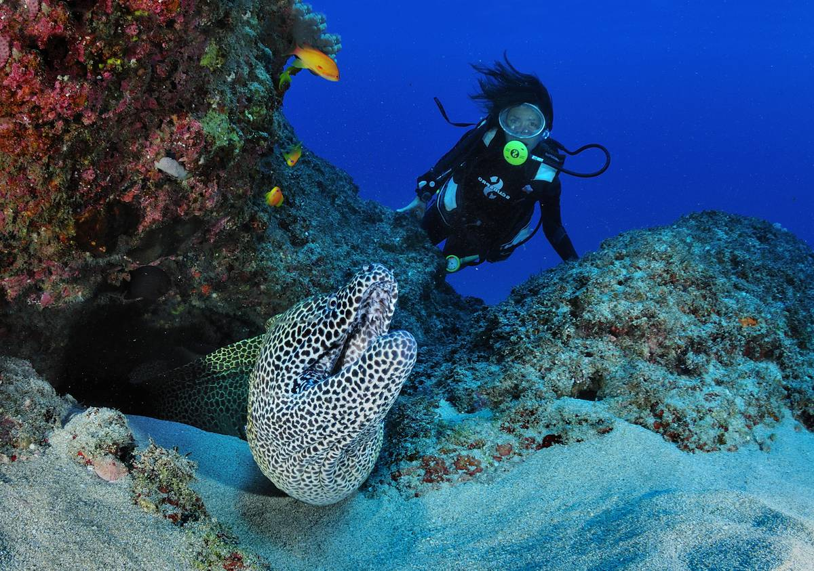

TERRE
Les randonnées
Il existe différents parcours de randonnée pour découvrir la biodiversité tropicale de La Réunion. Parmi eux, trois sentiers de Grande Randonnée ainsi que des sentiers littoraux plus doux offrent une expérience inégalable aux passionnés de trail, de trekking, de running et d’éco balade.

Les vélos
Pédalez du sommet des montagnes jusqu’en bord de mer, vous profiterez des décors à couper le souffle. Plus original, optez pour le vélo couché ou le quad qui vous procureront sensations assurées.
L'escalade
Préparez-vous à escalader les falaises de basalte, sur les blocs dans les ravines ou préférez une aventure en pratiquant l’accrobranche en forêt.
La spéléologie
Explorez et parcourez les tunnels de lave formés par le volcan très actif de La Réunion, appelé piton de la Fournaise.
Les activités équestres
Parcourez la nature, à cheval, au pas, au trot, au galop à travers les forêts, autour des étangs, au pied du volcan ou encore en bord de mer.
Le canyoning
Une multitude de bassins naturels, que vous soyez débutants, pratiquants amateurs ou friand de sports extrêmes. Découvrez une nature intacte en canyon entre torrents, cascades, parois et rivières de l’île.
MER
Les plages
Venez vous détendre sur les plages, vous n’avez qu’à choisir entre plages de sable blanc ou plages de sable noir.



L’océan et ses mammifères
Cap vers le large pour rencontrer les baleines et dauphins paré de votre combinaison de plongée, palmes, masque et tuba.

Les activités aquatiques
Vous pouvez aussi bien vous adonner au surf, jet ski, au paddle, ou encore au kyte surf, et la liste est encore longue.
Les sorties en bateau
- Pour explorer : Partez à bord d’un navire à fond de verre, en observant les cétacés ou bien en prenant l’apéritif au coucher du soleil.
- Pour se détendre : Optez pour la pêche au gros.
 

La plongée
Plongez sous les eaux de l'Océan Indien et découvrez la faune sous-marine : poissons clowns, poissons perroquets, murènes, anémones géantes, bénitiers, coraux, tortues...

 


AIR
Parapente, ULM,et parachute
Décollez en parapente, en ulm ou en parachute et survolez les paysages grandioses de La Réunion. Laissez-vous surprendre lors de vols d’exception, des vols couchers de soleil, du parapente acrobatique...

L’hélicoptère
Survolez l’île en hélicoptère pour le plaisir des yeux et dévorez la nature exubérante des cirques, du volcan, du Piton des Neiges, des remparts, des cascades vertigineuses et du littoral de La Réunion.